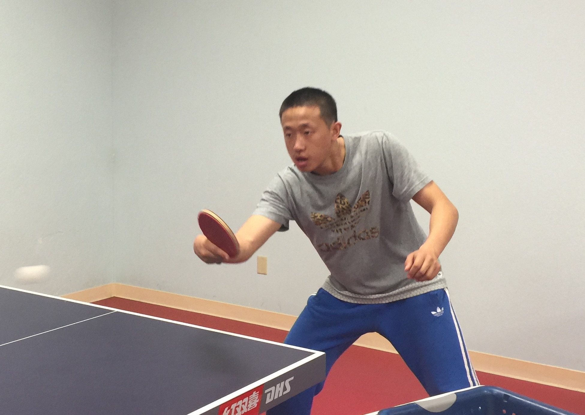

Private lessons are offered from 9am - 10pm every day. Call coach's number to arrange.
Coaches
| Phone | ||

|
Coach Gaolin Tang was head coach of Sichuan provincial team in China. World Champion Longcun Chen is his student. Coach Tang was a professional Ping Pong athelete and a team member of Sichuan provincial team too. He had also served as the head coach of Malaynesia and Tai National Team. | 408-666-9273 |
|  | Coach Jian Miao was a professional Ping Pong athlete of Jiling provincial team in China. | 408-915-7464 |
|
|
Coach Xinxin Tian was a professional Ping Pong athlete of Henan provincial Team in China. | 408-915-7464 |